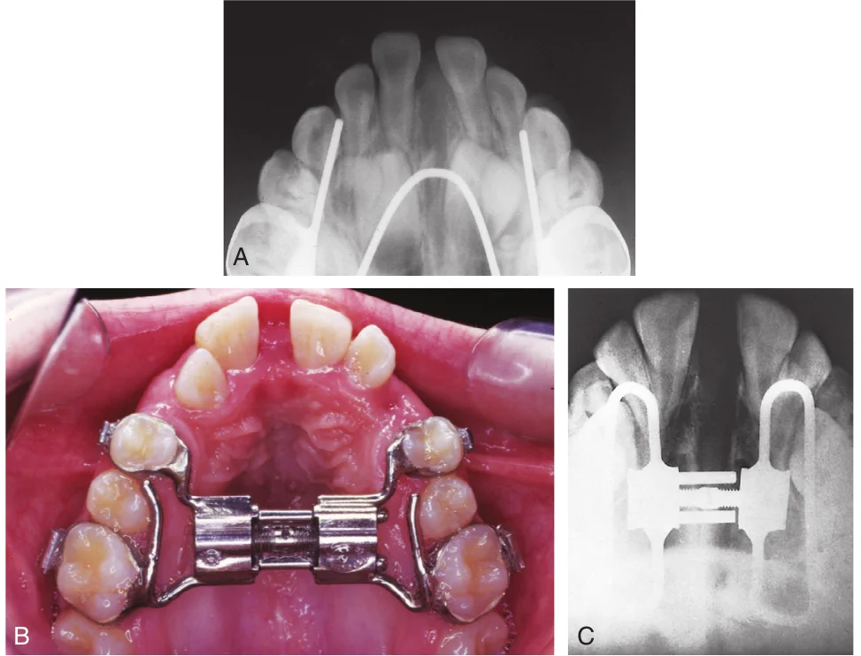

نسخه استخراجشده؛ ترجمه یا تأیید علمی انجام نشده است. وضعیت: captured
هدف اکسپنشن سریع، غلبه بر مقاومت سوچور میانی پالاتال است — نه صرفاً کج کردن دندانها به سمت باکال.
و اینجا یک منطق مکانیکی ظریف در کار است: برای رسیدن نیرو به سوچور، باید نیروی سنگین و سریع اعمال شود. این منطق برای نوجوانی است که سوچورش درهمتنیده شده: در او نیروی سبک و آهسته بیشتر صرف تیپ کردن دندانها و خم کردن استخوان آلوئولار میشود و سوچور را کمتر باز میکند.
⚠️ در کودک پیش از نوجوانی ماجرا فرق دارد: سوچور هنوز شل است و حتی نیروی سبک یک قوس لینگوال هم آن را تا حدی باز میکند. در دندانهای شیری و اوایل دورهی مختلط، اکسپنشن سریع مزیتی ندارد و میتواند به تغییر شکل بینی بینجامد.
💡 نشانهی موفقیت که هم تو و هم بیمار میبینید: باز شدن دیاستم بین ثنایاهای مرکزی بالا. این دیاستم یعنی سوچور واقعاً باز شده و اکسپنشن اسکلتی رخ داده، نه فقط دندانی.
👉 این را از پیش به بیمار و والدین بگو، وگرنه ظاهر شدن ناگهانی فاصله میان دندانهای جلو، نگرانکننده به نظر میرسد.

موفقیت RME تقریباً تماماً به سن بستگی دارد، چون به وضعیت سوچور بستگی دارد:
| سن | وضعیت سوچور | نتیجه |
|---|---|---|
| کودکی و اوایل نوجوانی | باز و با درهمتنیدگی کم | اکسپنشن عمدتاً اسکلتی |
| اواخر نوجوانی | درهمتنیدگی بیشتر | سهم دندانی افزایش مییابد |
| بزرگسالی | جوشخورده | نیازمند SARPE یا روش جراحی |
نکتهی مهم این است که سوچور یکباره بسته نمیشود؛ بهتدریج پیچیدهتر و درهمتنیدهتر میشود. جوش خوردن سوچور معمولاً از حدود ۱۵ سالگی و از خلف به قدام آغاز میشود و پیش از ۱۴ سالگی نادر است. پس این مرزها تدریجیاند، و سن تقویمی راهنمای دقیقی نیست — دو نوجوان همسن میتوانند وضعیت سوچور کاملاً متفاوتی داشته باشند.
⚠️ در بزرگسال، اصرار بر RME معمولی نتیجهی روشنی دارد: تیپینگ شدید دندانها به باکال، تحلیل استخوان باکال و تحلیل لثه، درد قابل توجه، و در نهایت عود سریع. چون نیرو جایی برای رفتن ندارد جز آلوئول.
👉 پیش از تصمیم در موارد مرزی، ارزیابی سوچور با تصویربرداری مقطعی میتواند کمککننده باشد.
پایان فاز فعال، پایان درمان نیست. سوچور باز شده اما هنوز استخوانی در آن ساخته نشده.
⚠️ برداشتن زودهنگام دستگاه یعنی عود سریع و از دست رفتن کل درمان. سوچوری که هنوز پر نشده، مثل شکستگی بدون گچ است.
👉 عوارض ممکن که باید از پیش توضیح داده شوند: درد و احساس فشار در روزهای نخست (گاهی تا بینی و چشم)، زخم بافت پالات زیر آکریل در صورت تطابق نامناسب، و تحلیل استخوان باکال در صورت اکسپنشن بیش از حد.
💡 برای پیشگیری از مورد آخر، معیار توقف را از پیش تعیین کن: اکسپنشن را تا کمی بیشاصلاح ادامه بده، یعنی تا جایی که کاسپهای پالاتال مولرهای بالا روی شیب لینگوال کاسپهای باکال مولرهای پایین بنشینند؛ این مقدار اضافه، عود مورد انتظار را جبران میکند. عبور کاسپها از این حد، یعنی اکسپنشن بیش از حد.
نوع سؤال: ساخت کلمه · 5 خانه
حروف منبع: ک · ر · و · ا · س